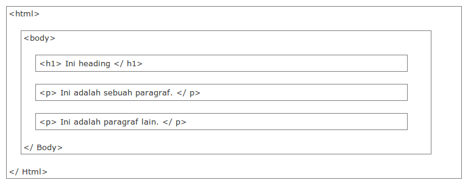

Tag merupakan tanda awalan dan akhiran yang terdapat pada perintah HTML yang nantinya akan dibaca oleh browser. Tag dibuat dengan menggunakan kurung siku <…>, di mana di dalamnya berisi nama tag, dan masing-masing tag mempunyai fungsi perintah yang berbeda-beda. Tag dituliskan secaca berpasangan karena terdiri dari tag pembuka dan penutup.

Elemen merupakan komponen HTML yang terdiri dari teks dan simbol yang berupa tag pembuka, isi tag, dan tag penutup. Elemen juga berisi dari elemen-elemen lainnya sehingga isinya tidak hanya satu tag saja, tetapi ada banyak tag.
Atribut merupakan informasi atau perintah tambahan yang terdapat pada elemen, yang berfungsi untuk menjelaskan perintah tag dalam elemen.

Berikut jenis atribut khusus dalam tag: